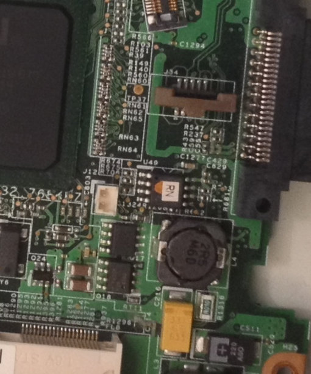

Lenovo Thinkpad R60
Untested on boards with external Radeon graphics adapter. If you have such board, proceed at your own risk and document if it does work.
Flashing instructions
External flashing
The flash IC is located at the bottom center of the mainboard. Access to the flash chip is blocked by the magnesium frame, so you need to disassemble the entire laptop and remove the mainboard. The flash chip is referenced as U49 in the schematics and in the boardview.

To disassemble the laptop, follow the Hardware Maintenance Manual.
Internal flashing on Vendor BIOS
This method describes a way to install coreboot with vendor firmware still installed on the Lenovo Thinkpad X60. It is reported to also work in Thinkpad R60, with the only difference being the board target you build coreboot for.
Flashing on coreboot
Default configuration of coreboot doesn’t feature any flash restrictions like the vendor firmware, therefore flashrom is able to flash any rom without problems.
Things tested and working in Linux 5.3:
Intel WiFi card
Suspend and resume
Native graphics initialization. Both legacy VGA and linear framebuffer work
GRUB2 2.04 and SeaBIOS 1.12.1 payloads
Reflashing with flashrom (use flashrom-git as of 17.09.2019)
2G+1G memory configuration working
2504 dock USB ports if not hotplugged
Things tested and not working:
2504 dock hotplugging
Black bar at the left side of the screen. Doesn’t appear in Linux. See picture at top
Sometimes it takes several second to run coreboot. Just wait for it